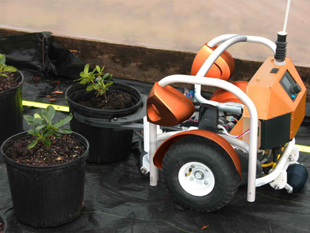
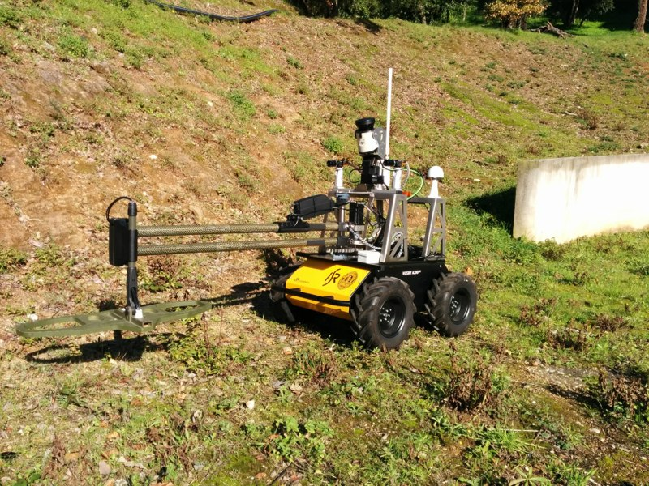
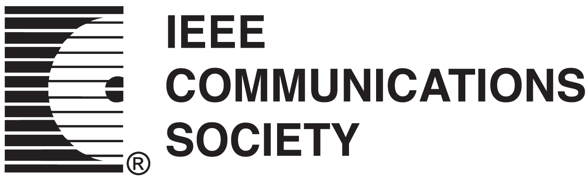
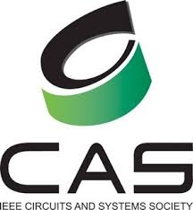

- Computer Society
- Robotics and Automation Society
- Communications Society
- Circuits and Systems Society
- Photonics Society
COMPUTER SOCIETY

IEEE Computer Society is the computing professional's single, unmatched source for technology information, inspiration, and collaboration.
The IEEE Computer Society is the computing professional's single, unmatched source for technology information, inspiration and collaboration. By making the most up-to-date and advanced information in the computing world easily accessible, we are the source that computing professionals trust to provide high quality, state-of-the-art information on an on-demand basis.
Information
Our wide range of technical conferences, publications, and digital library provide forums for top minds to come together to develop, validate, and disseminate the highest quality information. We offer everyone from students to advanced practitioners education, professional development, certifications, and standards for professional practices.
Training
Our unique training webinars, professional training, and the TechLeader Training Partner Program give organizations an opportunity to increase the technical knowledge and expertise of their staffs. These rich, self-selected, and self-paced programs help companies improve the quality of technical training and attract top talent while reducing costs.
Inspiration
What's more, because we offer our members a collaborative environment for creativity and productivity as well as the resources to advance their knowledge and professional training, we're the home of the world's great technology leaders and innovators.
Community
The IEEE Computer Society is the world's leading computing membership organization and the trusted information and career-development source for a global workforce of technology leaders including: professors, researchers, software engineers, IT professionals, employers, and students –our future technology leaders. Members have endless opportunities to network with the world's foremost technology professionals, to lead the community by volunteering and mentoring, and to both gain exposure and contribute to the field as authors and reviewers.
Robotics and Automation Society
The IEEE Robotics and Automation Society (RAS) puts members at the forefront of the latest breaking news and research in robotics and automation science and engineering. Members access an array of technical information including leading international conferences and journals, such as the IEEE Robotics and Automation Magazine, IEEE Transactions on Robotics (T-RO), and IEEE Transactions on Automation Science and Engineering (T-ASE). Members can become truly involved in the future of the field via RAS Technical Committees and global chapters, the Industrial Activities Board, and uniquely research-oriented competitions. The Society also has a YouTube channel for members to post their own robotics videos, and a very active student program.
Field of Interest (abridged): Applied and theoretical issues in robotics, intelligent machines and automation, emphasizing efficiency, productivity, quality, and reliability.
Focus is on both applied and theoretical issues in robotics and automation. Robotics is here defined to include intelligent machines and systems; whereas automation includes the use of automated methods in various applications to improve performance and productivity. The society sponsors a number of conferences, including the annual International Conference on Robotics and Automation. If you wish to purchase additional copies of publications included in your membership, please contact www.ieee.org/contactcenter.
IEEE Societies provide access to current information, opportunities to network with peers, and enhancement of the worldwide value of your profession. IEEE members receive special prices for Society memberships. If you are not an IEEE member, you may wish to join as an Affiliate.

Communications Society
The IEEE Communications Society gives members access to the latest breakthrough research in communications, specifically, information transfer with signals, including terminals, computers, systems, and operations; transmission media networks; new content/delivery methods; layout; protocol; and architecture. Membership benefits include a personal subscription to IEEE Communications Magazine (electronic and digital delivery), Communications Ontology with Patent Citations (electronic), IEEE Communications Surveys and Tutorials (electronic), IEEE RFID Virtual Journal (electronic), the IEEE/OCN Journal of Optical Communications and Networking (electronic), and the Journal of Lightwave Technology (electronic). In addition, members have affordable access to low rates on Society publications, discounted admission to all conferences sponsored by the Society (averaging 20 percent off non-member registration prices), and access to continuing-education materials.
Field of Interest (abridged): Information organization, collection and transfer using electronic, optical, and wireless channels and networks.
The IEEE Communications Society embraces science, technology, applications and standards for information organization, collection and transfer using electronic, optical and wireless channels and networks, including but not limited to: Systems and network architecture, control and management; Protocols, software and middleware; Quality of service, reliability and security; Modulation, detection, coding, and signaling; Switching and routing; Mobile and portable communications; Terminals and other end-user devices; Networks for content distribution and distributed computing; and Communications-based distributed resources control. The vision of the society is to be the organization of choice for communications professionals throughout the world. The International Conference on Communications, among others, is sponsored annually
Circuits and Systems Society

The IEEE Circuits and Systems Society gives members access to the latest breakthrough research on circuits and systems covering their theoretical foundations, applications, and architectures, as well as the implementation of algorithms for signal and information processing. Membership benefits include Society Newsletter (electronic), IEEE Circuits and Systems Magazine (electronic and print), IEEE RFIC Virtual Journal (electronic), IEEE RFID Virtual Journal (electronic), IEEE Circuits and Systems Society Digital Library and Conference Digital Library (electronic). In addition, members have affordable access to all other publications from the Society, unrestricted access to the CAS Conference Digital Library, as well as a reduction in registration fees to events such as the IEEE International Symposium on Circuits and Systems (ISCAS). Student members enjoy unrestricted Xplore access to CAS journal publication and conference proceedings. The Society also offers networking opportunities in multiple chapters spanning ten worldwide regions
.
Field of Interest (abridged): Theory, analysis, design, tools, and implementation of circuits and systems. The field spans basic scientific theory, signal and information processing, and applications.
Focuses are on the theory, analysis, design, tools, and implementation of circuits and systems. The field spans theoretical foundations, applications, architectures, and circuits and systems implementations of algorithms for signal and information processing. The society sponsors numerous conferences throughout the year, including the International Symposium on Circuits and Systems and various emerging technologies workshops.If you wish to purchase additional copies of publications included in your membership, please contact www.ieee.org/contactcenter.
IEEE Societies provide access to current information, opportunities to network with peers, and enhancement of the worldwide value of your profession. IEEE members receive special prices for Society memberships. If you are not an IEEE member, you may wish to join as an Affiliate.
Photonics Society

The IEEE Photonics Society is a leading professional network of 7,000+ members that provides access to technical information on all aspects of opto-electronic and photonic materials, devices, and systems, from R&D to design, manufacturing and applications. Join the Society today and start receiving free online access to four premier journals, hundreds of conference proceedings, opportunities to attend Society conferences and events at affordable prices, access to a professional network with members in 75+ worldwide chapters through the Society's online member directory, and more.
Focus is placed on all aspects of opto-electronic and photonic materials, devices, and systems - from research and development, to design and manufacture. The society sponsors and/or co-sponsors numerous conferences throughout the year, including the Photonics Society Annual Meeting. If you wish to purchase additional copies of publications included in your membership, please contact www.ieee.org/contactcenter.
IEEE Societies provide access to current information, opportunities to network with peers, and enhancement of the worldwide value of your profession. IEEE members receive special prices for Society memberships. If you are not an IEEE member, you may wish to join as an Affiliate.